From Eco Enzyme and Household Waste
Sanaz Aisya Janeeta • Ahmad Dhafin Ramadanish •
Ahmad Dhawy Adrian • Intan Permata Hati
Supported By & Participated In
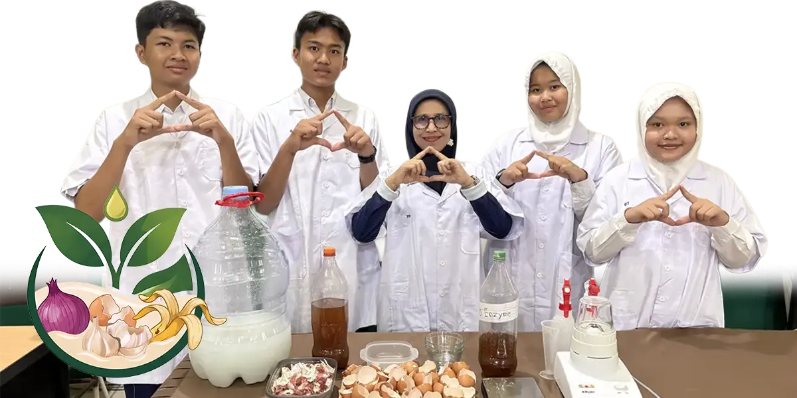
Household organic waste is often discarded even though it still contains potentially useful nutrients. In Indonesia, organic waste represents a large proportion of total waste, and unmanaged organic waste can contribute to environmental problems. Excessive chemical fertilizers affect soil and water quality.
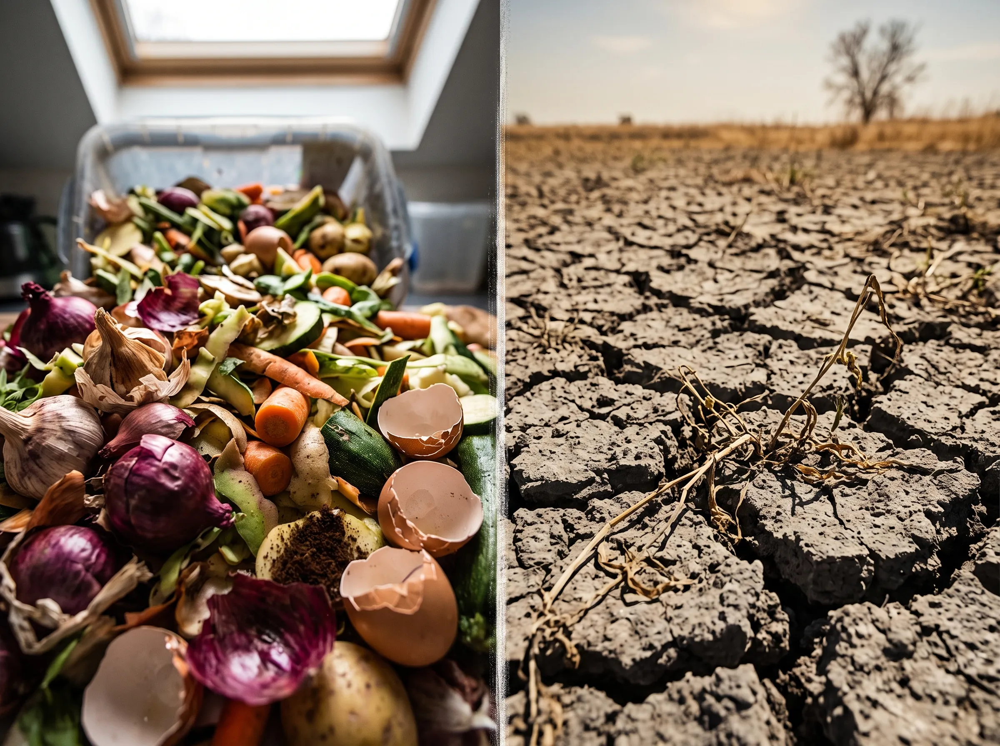
Instead of treating household organic waste as useless waste, we explored how it could be converted into a highly effective liquid organic fertilizer.
Combining essential household materials for optimal plant nutrition:
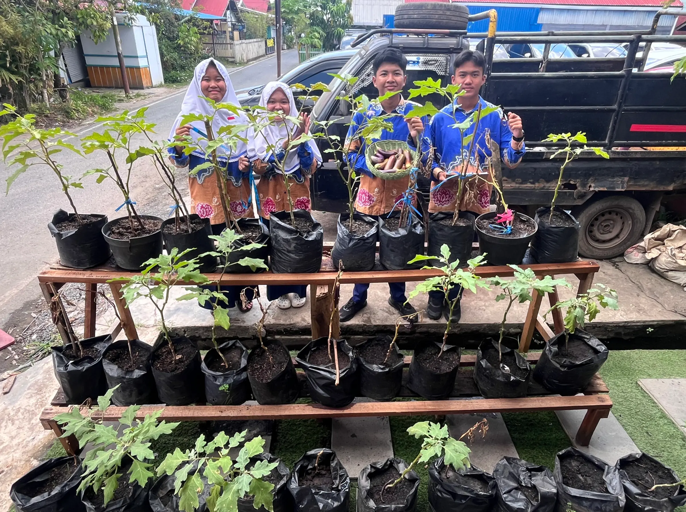
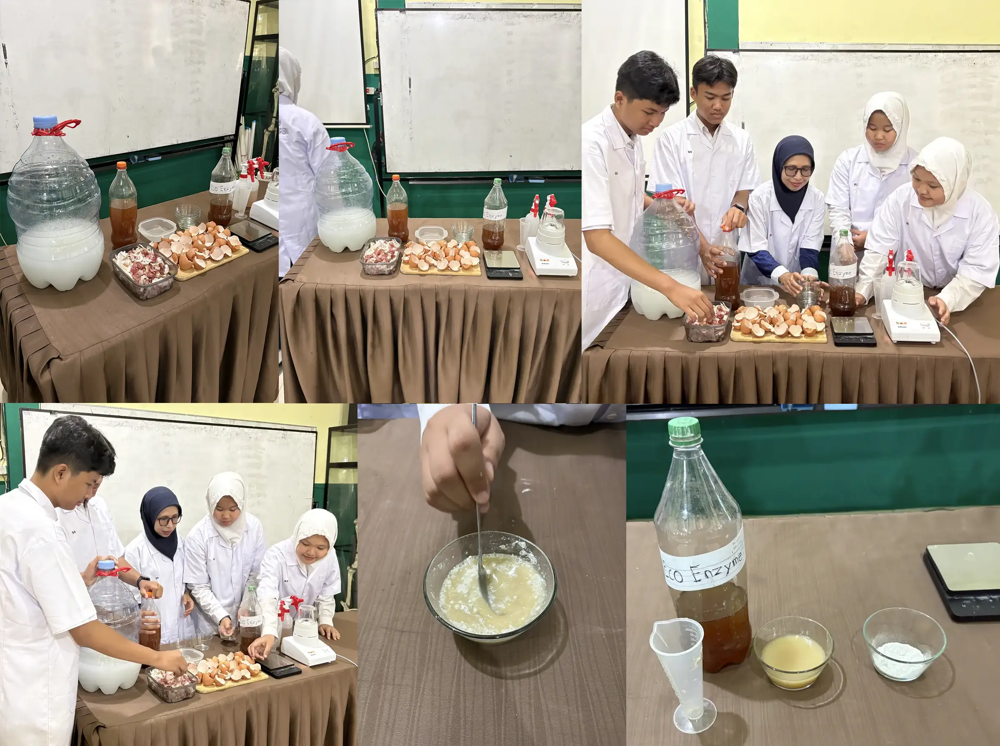
Fermented shallot/garlic skins + rice water + sugar for 7 days.
Fermented fruit peels + brown sugar + water for 3 months.
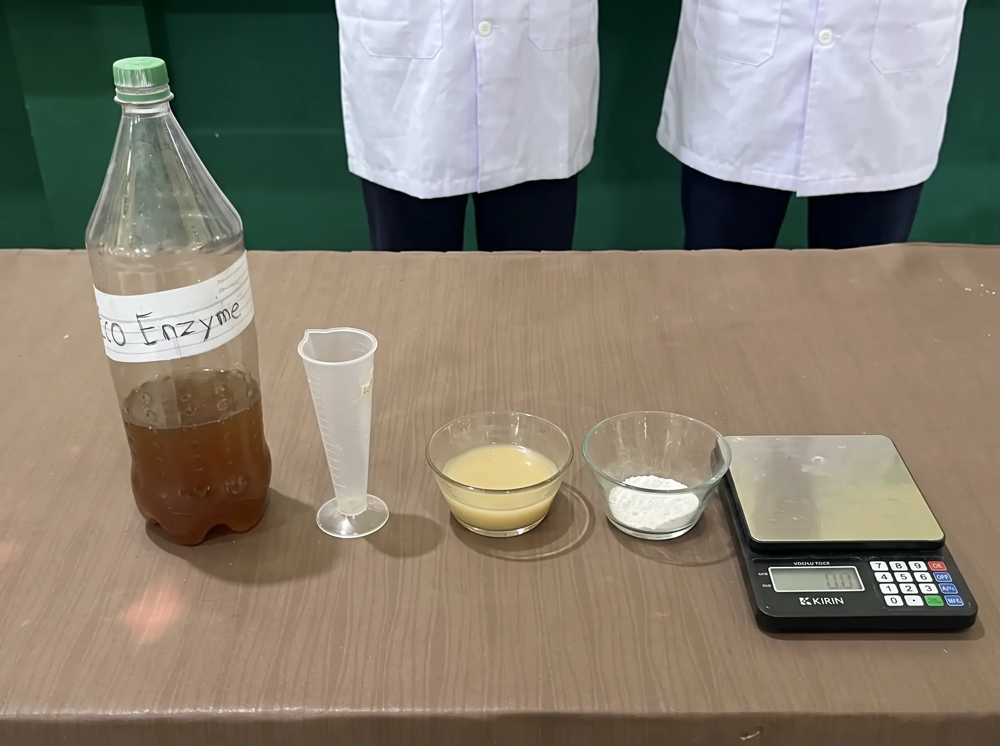
Ex: 100g eggshells + 100mL eco enzyme + 1,000mL POC
The plants were divided into 3 treatment groups, evaluating Plant height, Leaves, Flowers, Fruits, and Soil N-P-K.
Diluted at 3 parts AMEEX Grow : 25 parts water. Applied once per day.
Conventional fertilizer was applied once per month.
Well water only, applied once per day.
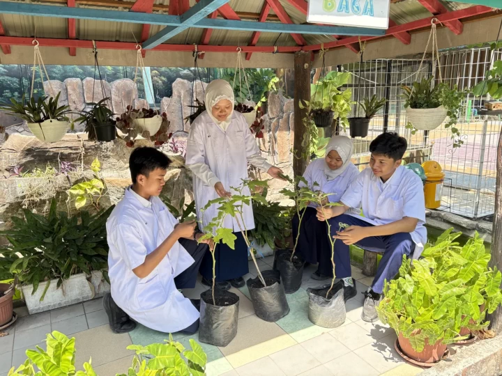
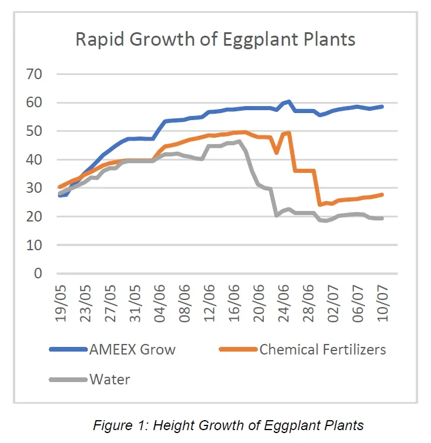
AMEEX Grow showed stronger height growth than chemical fertilizer and water. The formulation provides essential nutrients.
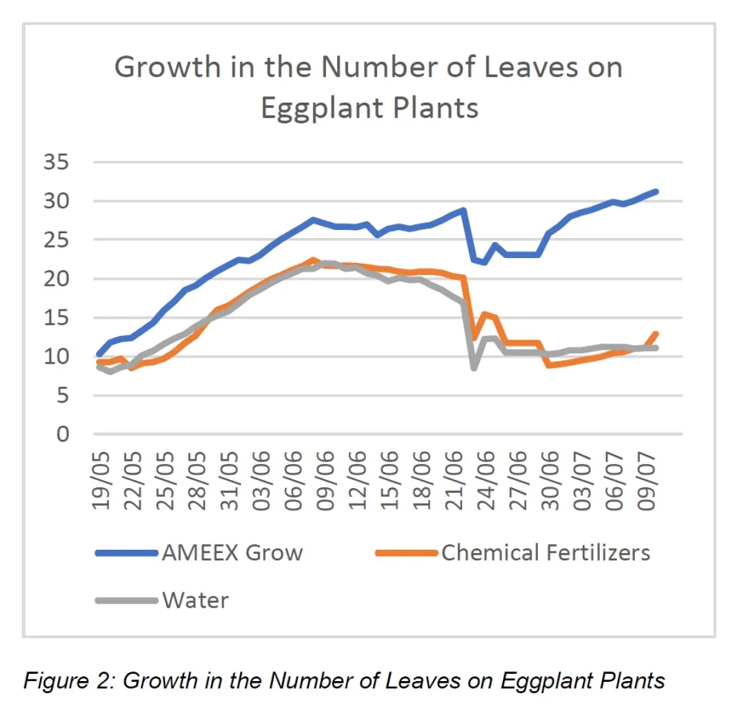
AMEEX Grow produced better leaf development. Nitrogen supports leaf formation, stem growth, and root development.
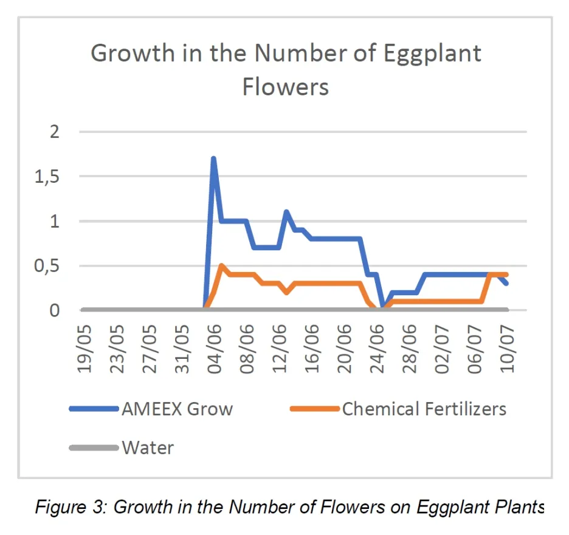
AMEEX Grow showed better flowering development. Flower formation indicates a successful transition to reproductive growth.
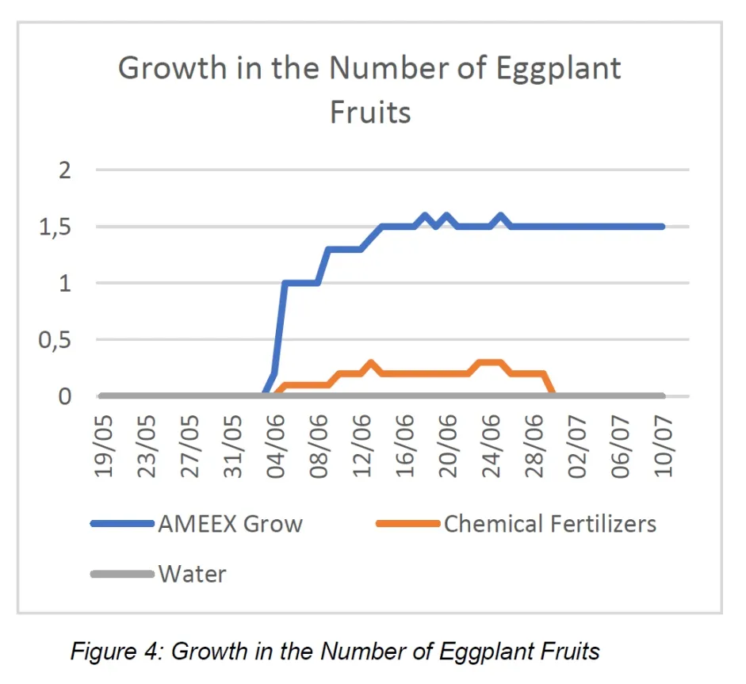
AMEEX Grow produced better fruit development. Potassium supports plant strength, water regulation, and fruit formation.
Analyzing the impact of treatments on essential soil macronutrients.
Supports leaf and stem growth.
Test Result: Similar to chemicalSupports plant development.
Test Result: Similar to chemicalSupports plant strength and fruit development.
Test Result: Higher with AMEEX Grow.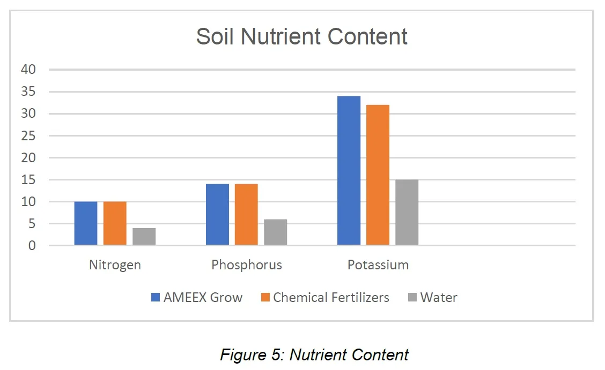
AMEEX Grow-treated plants showed better overall growth.
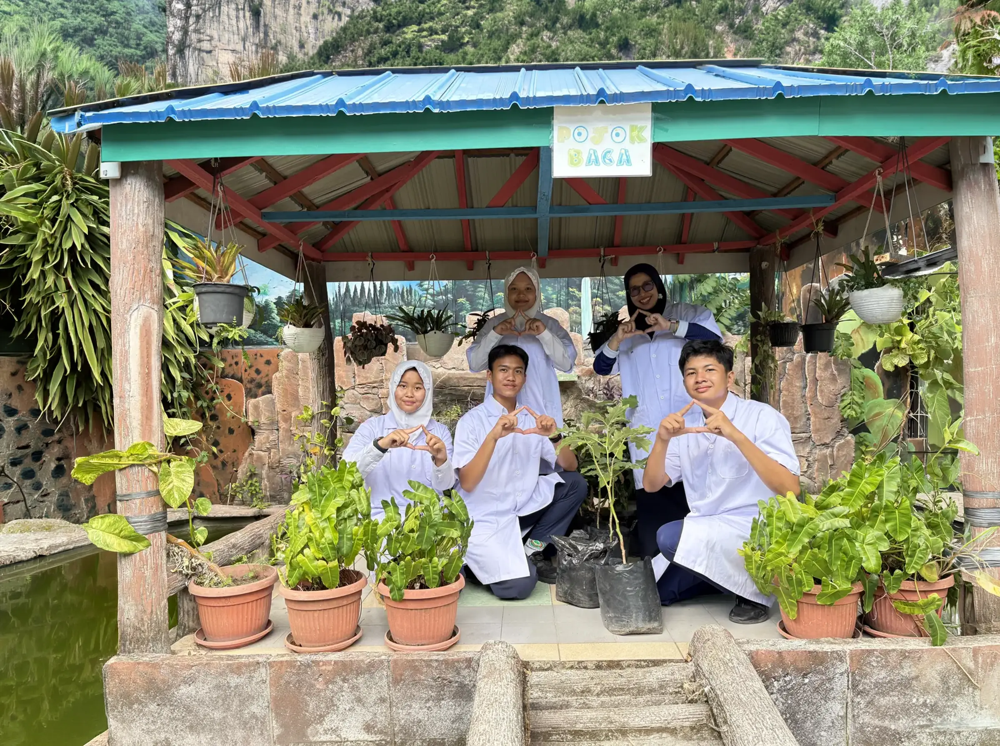
AMEEX Grow:
"AMEEX Grow shows potential as a sustainable fertilizer made from household organic waste."
Test more plants to ensure statistical validity and robustness of results.
Test on other crops to see broad applicability beyond purple eggplants.
Test in different soil conditions and climates for comprehensive evaluation.
Validate AMEEX Grow for wider agricultural applications.